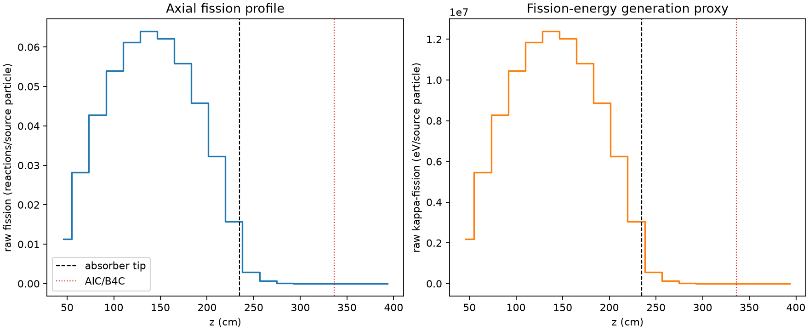
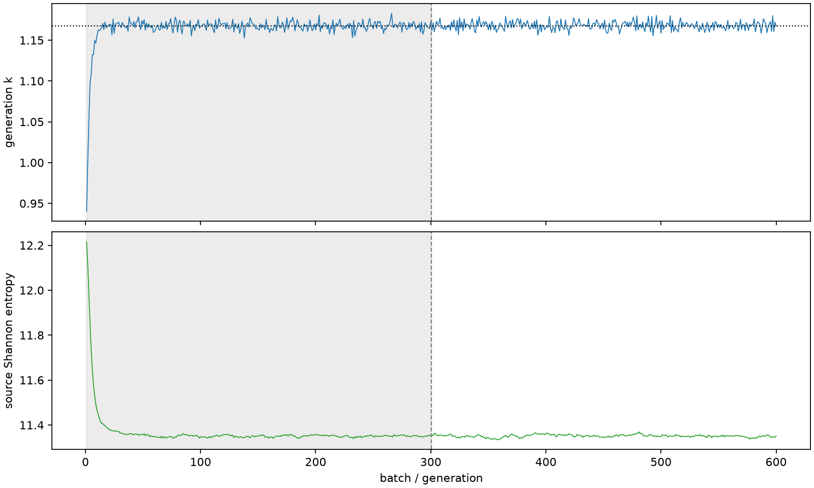

| field | value |
|---|---|
| experiment | V2-STAGE_256_OGRENCI_03-0026 |
| k | 1.1677652085838743 |
| MC standard error | 0.0001921565354355098 |
| seconds | 1027.906168608999 |
| acceptance | not_assessed |
| convergence | review_required |
Completed is output integrity only; physical and statistical review required. Zero tallies do not prove zero production or zero uncertainty.
| diagnostic | value |
|---|---|
| geometric fuel voxels | 5280 |
| zero fission tally voxels | 473 |
| low signal fuel voxels | 1561 |
| low signal fission share | 8.348468530626458e-05 |
| low signal kappa share | 8.352877075303442e-05 |
| important fission share | 0.9501244272820731 |
| previous filter included | 3719 |
| duration estimate s | 1562.5173488400023 |
| actual minus estimate s | -534.6111802310033 |
| fission relative MC error | statistics |
|---|---|
| all_geometric_fuel | {"voxels": 5280, "positive_mean_voxels": 4807, "zero_mean_voxels": 473, "undefined_relative_error_voxels": 473, "median": 0.01138959841609935, "p95": 0.9347585361158854, "maximum": 1.0000000000000002} |
| low_signal | {"voxels": 1561, "positive_mean_voxels": 1088, "zero_mean_voxels": 473, "undefined_relative_error_voxels": 473, "median": 0.5820276703214822, "p95": 1.0, "maximum": 1.0000000000000002} |
| important_95pct | {"voxels": 2491, "positive_mean_voxels": 2491, "zero_mean_voxels": 0, "undefined_relative_error_voxels": 0, "median": 0.006798687988426394, "p95": 0.010346289718079209, "maximum": 0.014560068385938143} |
| outside_previous_filter | {"voxels": 1561, "positive_mean_voxels": 1088, "zero_mean_voxels": 473, "undefined_relative_error_voxels": 473, "median": 0.5820276703214822, "p95": 1.0, "maximum": 1.0000000000000002} |
| kappa_fission relative MC error | statistics |
|---|---|
| all_geometric_fuel | {"voxels": 5280, "positive_mean_voxels": 4807, "zero_mean_voxels": 473, "undefined_relative_error_voxels": 473, "median": 0.011375735571660696, "p95": 0.9346374537861848, "maximum": 1.0000000000000002} |
| low_signal | {"voxels": 1561, "positive_mean_voxels": 1088, "zero_mean_voxels": 473, "undefined_relative_error_voxels": 473, "median": 0.5815976757603996, "p95": 1.0, "maximum": 1.0000000000000002} |
| important_95pct | {"voxels": 2491, "positive_mean_voxels": 2491, "zero_mean_voxels": 0, "undefined_relative_error_voxels": 0, "median": 0.006790782623347464, "p95": 0.010334077438967778, "maximum": 0.014542996173203935} |
| outside_previous_filter | {"voxels": 1561, "positive_mean_voxels": 1088, "zero_mean_voxels": 473, "undefined_relative_error_voxels": 473, "median": 0.5815976757603996, "p95": 1.0, "maximum": 1.0000000000000002} |
| axial bin | fission share | kappa-fission share |
|---|---|---|
| 1 | 0.023618329346703607 | 0.02361940460321284 |
| 2 | 0.059119816383621744 | 0.05911951168670777 |
| 3 | 0.0897094375366474 | 0.08970893193412631 |
| 4 | 0.11322604811561614 | 0.1132256048359283 |
| 5 | 0.12832754989767187 | 0.12832667136079748 |
| 6 | 0.13411808297330063 | 0.13411743096876066 |
| 7 | 0.13031506170725377 | 0.13031408984781637 |
| 8 | 0.11705447159344215 | 0.11705378178003752 |
| 9 | 0.0960524980306272 | 0.09605177740740442 |
| 10 | 0.06762461435187561 | 0.06762429465005754 |
| 11 | 0.03293896182739378 | 0.032939930093259844 |
| 12 | 0.006169448433947195 | 0.006172086471256346 |
| 13 | 0.001335551972375033 | 0.0013361522026047762 |
| 14 | 0.00030074739312165933 | 0.0003009028941139962 |
| 15 | 6.80587268525271e-05 | 6.809399898393167e-05 |
| 16 | 1.699605507250977e-05 | 1.7005702097861183e-05 |
| 17 | 3.4878532285617224e-06 | 3.491057338309278e-06 |
| 18 | 5.338352914185669e-07 | 5.34739769465112e-07 |
| 19 | 1.8259406683501718e-07 | 1.8247194416247866e-07 |
| 20 | 1.2137189031727126e-07 | 1.2129378227698624e-07 |
Histories include the inactive-to-active transition at batch 300. kappa-fission approximates fission energy production, not total heat deposition.

